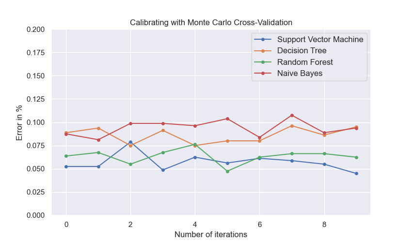
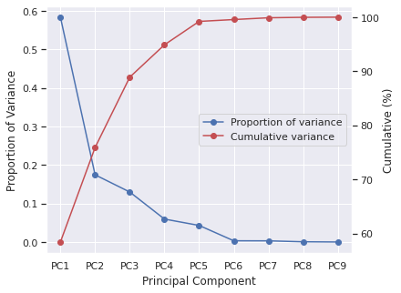
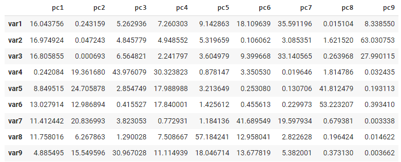
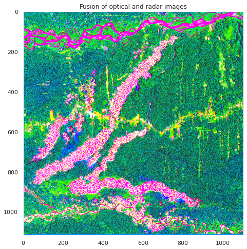
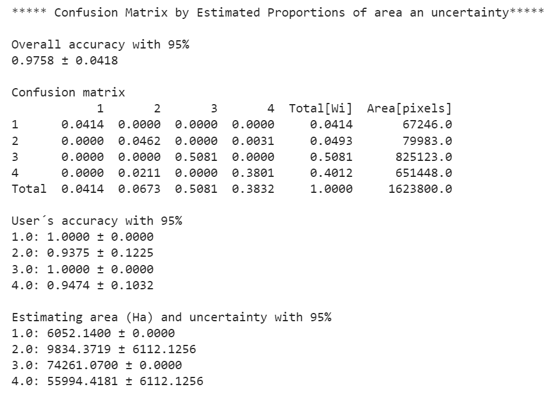

Get Started¶
This Get Started is intended as a guide to apply several remote sensing tools in order to analyze and process satellite imagery such as Landsat, Sentinel-2, etc. Various methods including ML/DL, Spectral Mixture Analysis, Calibrations methods, Principal Component Analysis, among others are available in this python package.
Content¶
Example 01: Random Forest (RF) classifier
Example 02: Calibration methods for supervised classification
Example 03: Imagery Fusion - optical/radar
Example 04: Confusion matrix by estimated proportions of area with a confidence interval at 95%
Example 05: Linear trend analysis to map forest degradation
Brief examples¶
Example 01: Random Forest (RF) classifier¶
In this example, in a small region of southern Brazil, optical imagery from Landsat-8 OLI (Operational Land Imager) will be used to classify land cover using the machine learning algorithm Random Forest (RF) (Breiman, 2001). Four types of land cover will be mapped, i.e., agriculture, forest, bare soil and water. The input data needed is the satellite image and the spectral signatures collected. The output as a dictionary will provide: i) confusion matrix, ii) overall accuracy, iii) kappa index and iv) a classes map.
01. Optical image to be used¶
Landsat-8 OLI (Operational Land Imager) will be used to obtain in order to classify using Random Forest (RF). This image, which is in surface reflectance with bands:
- Blue -> B2
- Green -> B3
- Red -> B4
- Nir -> B5
- Swir1 -> B6
- Swir2 -> B7
The image and signatures to be used can be downloaded here:
02. Libraries to be used in this example¶
1 2 3 4 5 6 7 8 | |
03. Image and endmembers¶
We will upload a satellite image as a .tif and endmembers as a .dbf. It is possible to extract endmembers values using the extract() function. In this case, upload only a shapefile (point feature) of samples without extracted spectral values. Please see tutorials section for more details.
1 2 3 4 5 6 7 8 9 | |

04. Classifying with Random Forest¶
An instance of mla():
1 | |
1 | |
5.0 Results¶
Dictionary of results
1 | |
1 | |
1 | |
1 | |

06. Preparing the image before plotting¶
1 2 | |
plotRGB() algorithm is easy:
1 2 3 4 5 6 7 8 9 10 | |

Example 02: Calibration methods for supervised classification¶
Given a large number of machine learning algorithms, it is necessary to select the one with the best performance in the classification, i.e., the algorithm in which the training and testing data used converge the learning iteratively to a solution that appears to be satisfactory (Tarazona et al., 2021). To deal with this, users can apply the calibration methods Leave One Out Cross-Validation (LOOCV), Cross-Validation (CV) and Monte Carlo Cross-Validation (MCCV) in order to calibrate a supervised classification with different algorithms. The input data needed are the spectral signatures collected as a .dbf or .csv. The output will provide a graph with the errors of each classifier obtained.
01. Endmembers as a .dbf¶
1 2 | |
02. An instance of calmla()¶
1 | |
03. Applying the splitData() method¶
1 | |
Parameters:
split_data: An instance obtained withsplitData().models: Support Vector Machine (svm), Decision Tree (dt), Random Forest (rf) and Naive Bayes (nb).n_iter: Number of iterations.
04. Running MCCV¶
1 2 | |
Calibration results:

With this result it can be observed that SVM and RF obtained a higher overall accuracy (less error). Therefore, you can use these algorithms to classify a satellite image.
Example 03: Imagery Fusion - optical/radar¶
This is an area where scikit-eo provides a novel approach to merge different types of satellite imagery. We are in a case where, after combining different variables into a single output, we want to know the contributions of the different original variables in the data fusion. The fusion of radar and optical images, despite of its well-know use, to improve land cover mapping, currently has no tools that help researchers to integrate or combine those resources. In this third example, users can apply imagery fusion with different observation geometries and different ranges of the electromagnetic spectrum (Tarazona et al., 2021). The input data needed are the optical satellite image and the radar satellite image, for instance.
In scikit-eo we developed the fusionrs() function which provides us with a dictionary with the following image fusion interpretation features:
- Fused_images: The fusion of both images into a 3-dimensional array (rows, cols, bands).
- Variance: The variance obtained.
- Proportion_of_variance: The proportion of the obtained variance.
- Cumulative_variance: The cumulative variance.
- Correlation: Correlation of the original bands with the principal components.
- Contributions_in_%: The contributions of each optical and radar band in the fusion.
01. Loading dataset¶
Loading a radar and optical imagery with a total of 9 bands. Optical imagery has 6 bands Blue, Green, Red, NIR, SWIR1 and SWIR2, while radar imagery has 3 bands VV, VH and VV/VH.
1 2 3 4 5 | |
02. Applying the fusionrs:¶
1 | |
03. Dictionary of results:¶
1 | |
04. Proportion of variance:¶
1 | |
05. Cumulative variance (%):¶
1 | |
06. Showing the proportion of variance and cumulative:¶
1 2 3 4 5 6 7 8 9 10 11 12 13 14 15 16 17 18 19 | |

07. Contributions of each variable in %:¶
1 | |

Here, var1, var2, ... var12 refer to Blue, Green, ... VV/VH bands respectively. It can be observed that var2 (Green) has a higher contribution percentage 16.9% than other variables. With respect to radar polarizations, we can note that var8 (VH polarization) has a higher contribution 11.8% than other radar bands.
08. Preparing the image:¶
1 2 3 4 5 6 | |

Example 04: Confusion matrix by estimated proportions of area with a confidence interval at 95%¶
In this final example, after obtaining the predicted class map, we are in a case where we want to know the uncertainties of each class. The assessing accuracy and area estimate will be obtained following guidance proposed by (Olofsson et al., 2014). All that users need are the confusion matrix and a previously obtained predicted class map.
In scikit-eo we developed the confintervalML function to estimate area and uncertainty with 95%. confintervalML requires the following parameters:
- matrix: confusion matrix or error matrix in numpy.ndarray.
- image_pred: a 2-dimensional array (rows, cols). This array should be the classified image with predicted classes.
- pixel_size: Pixel size of the classified image. Set by default as 10 meters. In this example is 30 meters (Landsat).
- conf: Confidence interval. By default is 95% (1.96).
- nodata: No data must be specified as 0, NaN or any other value. Keep in mind with this parameter.
1 2 3 4 5 6 7 8 9 10 11 | |
Results:

Example 05: Linear trend analysis to map forest degradation¶
In this tutorial, forest degradation will be mapped using the Maximum Value Compositing (MVC) of Normalized Difference Vegetation Index (NDVI). Therefore, NDVI as a proxy of NPP makes it a useful indicator of resilience of ecosystems that allows its monitoring and evaluation through remote sensing, and it is the indicator we will use for the purposes of this example.
Detecting forest degradation in terms of long-term loss of forest productivity of ecosystems through a Simple Linear Trend (SLT) is a standard method. Initiatives to monitor forest degradation using remote sensing techniques are few and urgent for the effects of conservation and restoration of degraded ecosystems in Peru.
The study area is located in Madre de Dios, a region located in southeastern Peru. Madre de Dios is a biodiversity hotspot, with 40% of its area protected by a set of Natural Protected Areas and Native Communities, and it has the largest coal reserves in the world.
The main drivers of forest degradation are economic activities such as gold mining, logging and agriculture. Gold mining represents the first large-scale economic activity in Madre de Dios.
01. Optical image to be used¶
NDVI from 2000 to 2015 will be used. These indices were obtained from Landsat-5 and Landsat-8 images. One per year.
The images as stack can be downloaded here:
02. Libraries to be used in this example¶
1 2 3 4 5 | |
Let´s plot the images (NDVI) from 2000 to 2015:
1 | |

Instance of linearTrend:
1 | |
Applying the LN() function:
1 | |
Dictionary of esults:
1 2 | |
Let´s plot the slope and p-value obtained:
1 2 3 4 5 6 7 8 9 10 11 12 13 14 15 16 17 18 19 20 21 | |

It is necessary to mention that forest degradation is expected to result in a statistically significant negative slope in the NDVI trend. The statistical robustness of the estimated trend was tested with a test from ρ (P-value) obtained from the simple regression function. We defined the identification of degradation, with greater probability, at 95% of reliability.